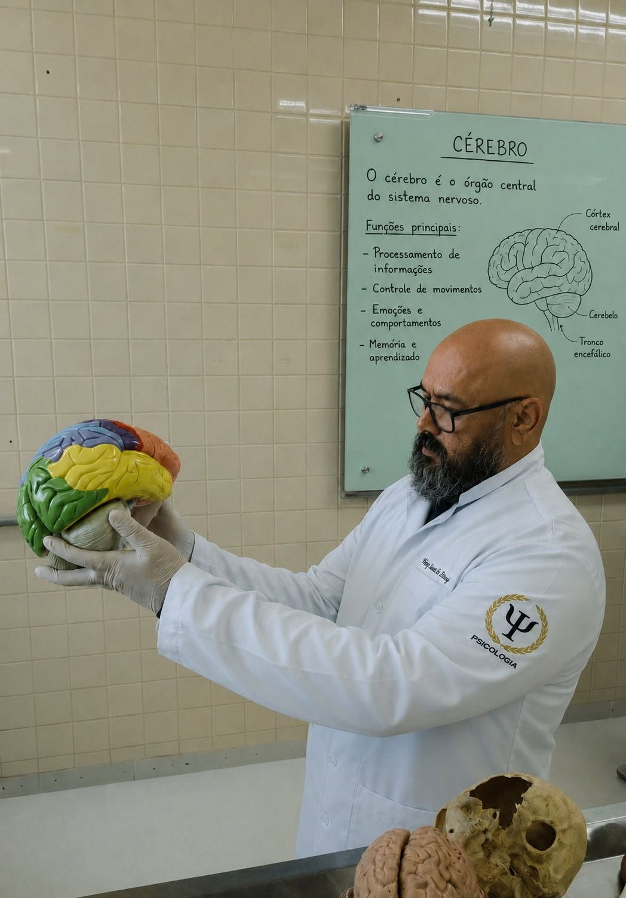

Depois de mais de duas décadas dedicadas à Tecnologia da Informação e à docência, Weney Lima de Araújo abre uma nova frente de estudos: atualmente cursa Psicologia na Universidade Católica de Brasília (UCB).
A escolha não é um desvio de rota, mas uma extensão natural de uma trajetória construída em torno da educação. Assim como buscou compreender como as tecnologias podem transformar o ensino, ele agora se dedica a entender o que está por trás de cada processo de aprendizagem: como as pessoas pensam, sentem, se motivam e se relacionam com o mundo à sua volta — inclusive com o mundo digital que ajudou a apresentar a tantos estudantes.
Cada novo desafio é tratado como mais uma linha de código a ser compreendida, mais um capítulo a ser escrito na coleção de conhecimentos que constrói ao longo da vida. Aprender, para Weney, nunca teve data para terminar — e a Psicologia surge como mais uma ferramenta para formar educadores e cidadãos mais completos, atentos tanto à tela quanto à pessoa que está diante dela.
Que este novo ciclo reforce o que já guia toda a sua trajetória: a convicção de que tecnologia, pedagogia e compreensão humana caminham juntas na construção de uma educação mais crítica, inclusiva e humana.